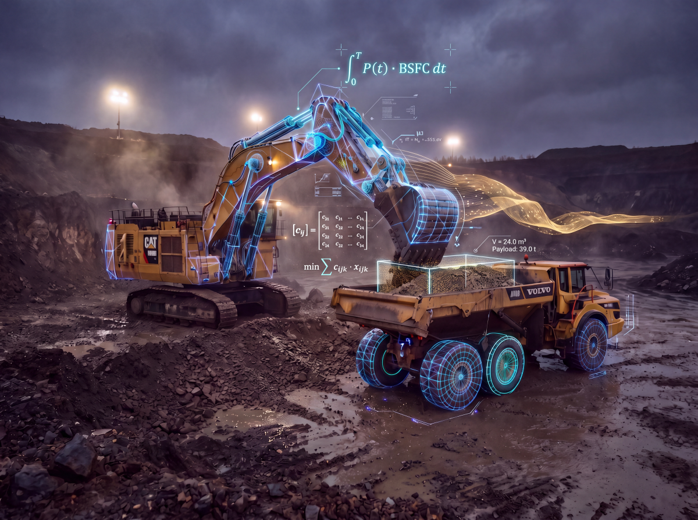

Heuristic Fuel & Gold Yield Optimization.
High-performance quantitative decision systems for alluvial and open-pit mining operations. Built on linear algebra, physical mass-balance rules, and strict diesel rationing quotas.

Fleet & Fuel Optimization
Mathematical dispatch algorithms utilizing Linear Algebra and MILP models to minimize specific fuel consumption (L/m³) under daily shift rationing, eliminating shovel queueing.
Hydrodynamic Tailings Shield
Gravimetric recovery modeling based on Stokes Law fluid mechanics to dynamically balance wash-plant pulp density, preventing fine gold losses in sluice tailings.
Fuel Audit & Discrepancy Detection
Cross-reconciliation between thermodynamic kinematic consumption and fuel pump logs to instantly isolate operational deviations, line leaks, and unaccounted fuel loss.
Air-Gapped Industrial Nodes
Self-contained on-premises edge computing architecture running in hardened containers, engineered for isolated mining camps operating without satellite or cellular internet.
Expert Systems for Alluvial Mining
Deterministic physical decision logic incorporating alluvial swell factors, rolling resistance in muddy haul roads, and equipment mechanical availability bounds.
Telemetry & Machine Learning Ready
Industrial time-series spatial infrastructure architected to ingest high-frequency GPS telemetry and train localized Machine Learning models for behavioral anomaly detection.